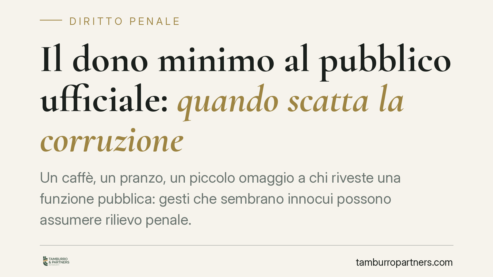

Il dono "minimo" al pubblico ufficiale: quando scatta la corruzione
Un caffè, un pranzo, un piccolo omaggio a chi riveste una funzione pubblica: gesti che sembrano innocui possono assumere rilievo penale. La giurisprudenza è costante nel ritenere che il valore dell'utilità non conti di per sé. Ciò che conta è il legame tra il dono e un atto contrario ai doveri d'ufficio. Un principio che riguarda tanto il funzionario quanto il privato.

Il principio: nessuna soglia minima di valore
Nel diritto penale italiano la corruzione non si misura con il metro del prezzo. L'orientamento consolidato della Corte di Cassazione è chiaro: ciò che rende penalmente rilevante un dono a un pubblico ufficiale non è la sua entità economica, ma la sua funzione.
Quando un'utilità — anche di valore irrisorio — costituisce il corrispettivo di un atto contrario ai doveri d'ufficio, si realizza quello che la giurisprudenza definisce mercimonio della funzione pubblica: la messa in vendita, di fatto, di un potere che dovrebbe essere esercitato con imparzialità. In questa prospettiva un pranzo offerto per "ammorbidire" un controllo può pesare quanto una somma di denaro.
Inquadramento normativo: 318 e 319 a confronto
Il codice distingue due fattispecie.
L'art. 318 c.p. (corruzione per l'esercizio della funzione) punisce il pubblico ufficiale che riceve denaro o altra utilità in relazione all'esercizio dei suoi poteri, senza che sia individuato un atto specifico contrario ai doveri.
L'art. 319 c.p. (corruzione propria) colpisce invece l'ipotesi più grave: il funzionario riceve l'utilità per omettere o ritardare un atto d'ufficio, oppure per compiere un atto contrario ai propri doveri. È qui che il dono "minimo" assume la massima pericolosità, perché viene retribuito un tradimento della funzione.
Va ricordato un dato spesso trascurato: l'art. 321 c.p. estende la punibilità anche al privato corruttore, con pene parametrate su quelle previste per il pubblico ufficiale. Chi offre, dunque, non è un semplice spettatore.
Il vero nodo: la prova del nesso
Il punto più delicato non è la condotta in sé, ma la dimostrazione del legame tra l'utilità ricevuta e l'atto. Si parla di nesso sinallagmatico: deve emergere che il dono è la contropartita di un comportamento d'ufficio, non una cortesia neutra.
In assenza di un accordo esplicito, il giudice ricostruisce questo legame attraverso indizi: la coincidenza temporale tra il dono e l'atto, i rapporti tra le parti, l'anomalia del comportamento del funzionario, la ripetitività dei gesti. È proprio su questo terreno probatorio che si gioca la differenza tra assoluzione e condanna.
Per delimitare i confini, due distinzioni sono utili. L'art. 319-quater c.p. (induzione indebita) riguarda i casi in cui il funzionario induce il privato a dare, sfruttando una posizione di forza: qui il privato subisce, pur mantenendo margini di scelta. L'art. 322 c.p. (istigazione alla corruzione) punisce invece l'offerta o la promessa non accettata: la corruzione resta allo stadio del tentativo. Collocare correttamente il fatto in una di queste cornici incide in modo decisivo sulla responsabilità.
Implicazioni pratiche
Per chi opera a contatto con la pubblica amministrazione — imprenditori, professionisti, dipendenti pubblici — il messaggio è netto. Non esiste una "franchigia" di cortesia che metta al riparo in assoluto. Un omaggio può diventare la prova di un patto corruttivo quando si inserisce in un contesto in cui si attende, o si è appena ottenuto, un atto favorevole e irregolare.
Il rischio non riguarda solo chi riceve, ma anche chi offre. E le conseguenze non sono soltanto penali: si aggiungono profili disciplinari, reputazionali e, per le imprese, possibili ricadute sulla responsabilità degli enti.
Cosa fare in concreto
- Verifica il contesto. Prima di qualsiasi omaggio verso soggetti pubblici, valuta se esista un procedimento, un controllo o una decisione in corso che vi riguardi: in quei casi, astieniti.
- Consulta i codici di comportamento. Le amministrazioni fissano soglie e divieti sugli omaggi (spesso un valore modico annuale): rispettali e, nel dubbio, considera inopportuno il dono.
- Tutela la tracciabilità. Documenta rapporti e comunicazioni con la PA attraverso canali formali, riducendo spazi di ambiguità.
- Adotta presìdi interni. Per le aziende, consigliamo di aggiornare modelli organizzativi e protocolli anticorruzione, con formazione mirata del personale.
- Non improvvisare in caso di indagine. Se ricevi un atto d'indagine, consigliamo di non rilasciare dichiarazioni prima di una valutazione difensiva.
Disclaimer
Contributo informativo a cura di Tamburro & Partners - Avv. Giuseppe Tamburro. Non costituisce parere legale.
Ogni condominio ha una storia a sé.
Se gestisci un'amministrazione e vuoi un confronto su una specifica questione condominiale, scrivi allo studio. Ti rispondiamo entro un giorno lavorativo.